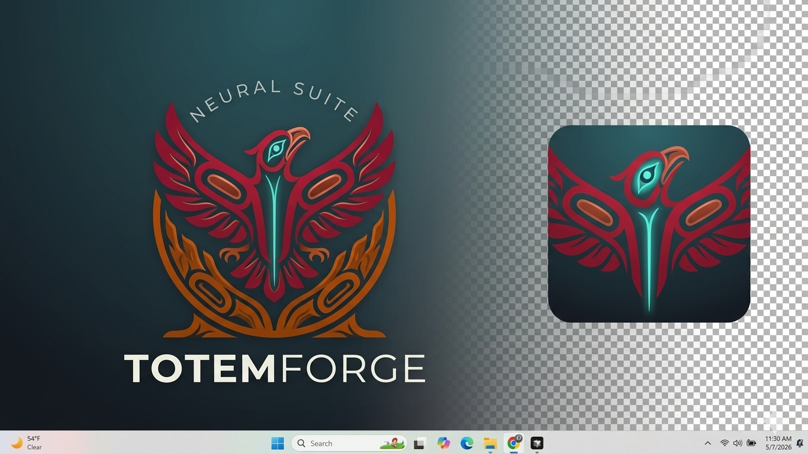

Longhouse: tap a cedar block to enter the Forge and carve. Use Practice for a yellow-cedar workshop (no saving, no Potlatch). Phonetics under each Salish name stay visible in the bar above.
Forge: shatter snags; at 100% the Potlatch wraps the animal onto the pole. Esc resets (forge) or exits Practice to the Longhouse.

TotemForge
Coast Salish formline • Breath • Carving
Awaken sound and touch, then meet the Master Log on Salish Sea ground.